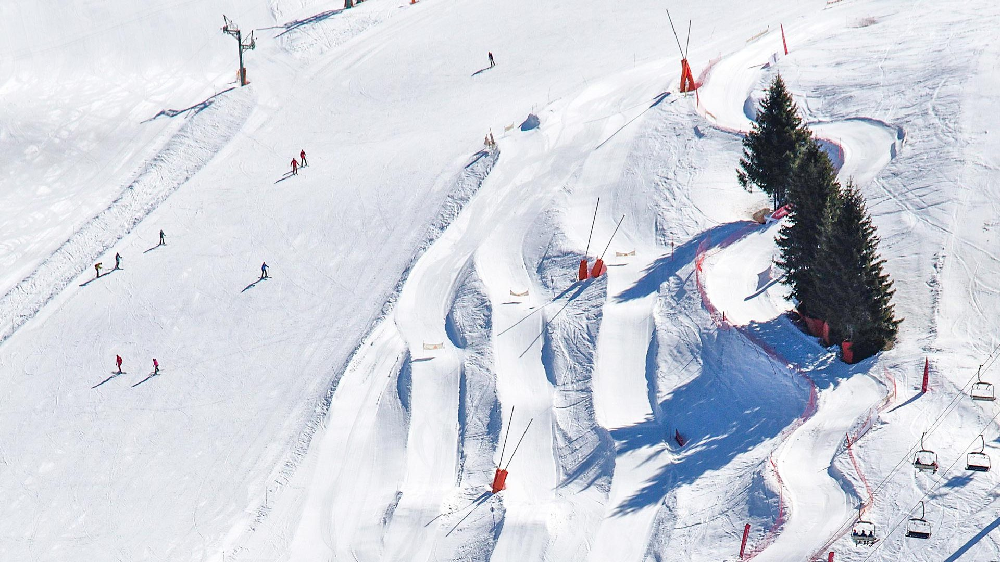
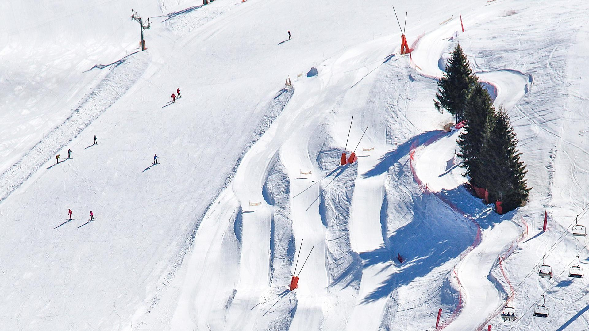
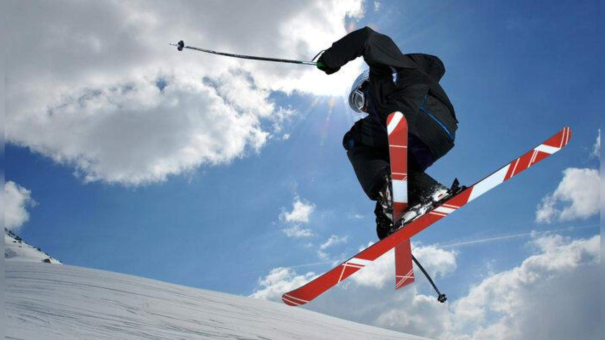
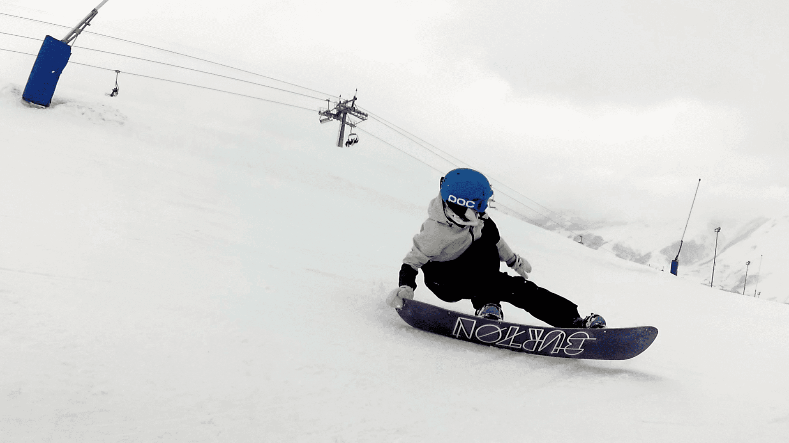
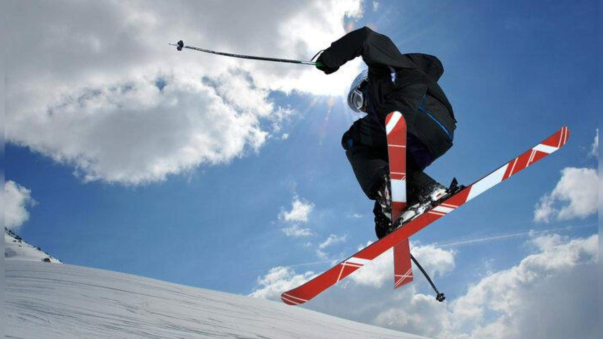
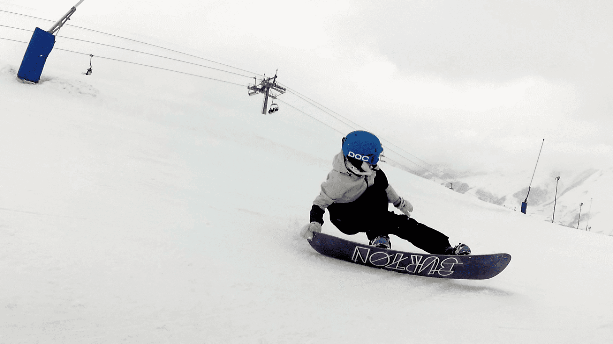
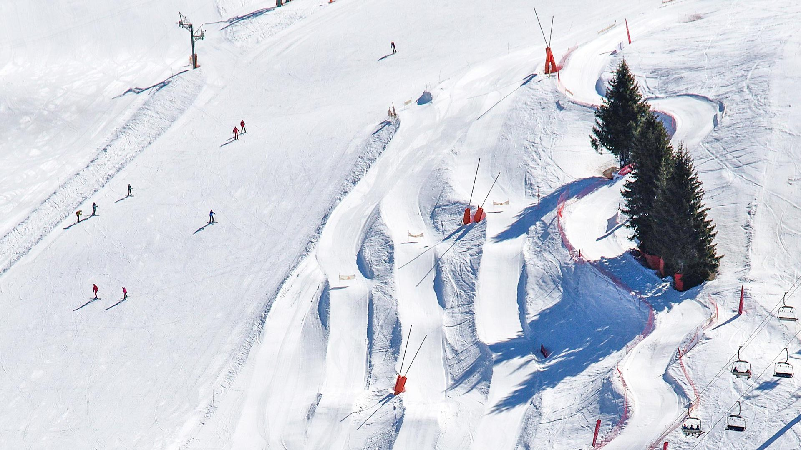
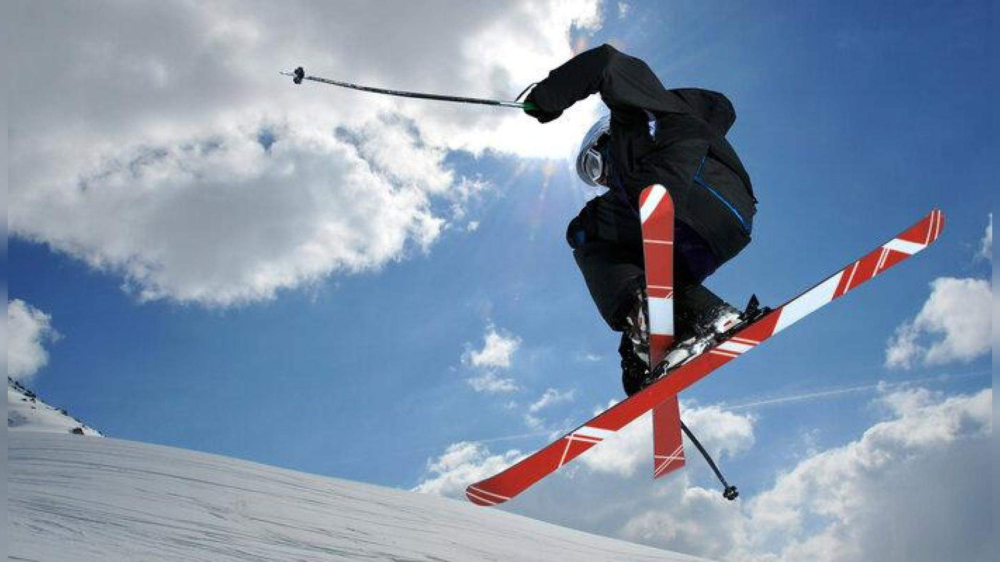
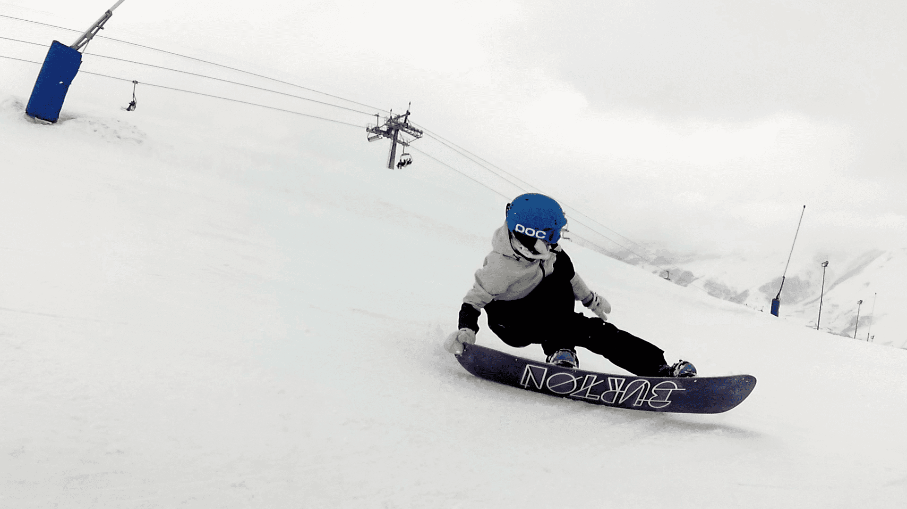

 



⬆



Фрістайл ( англ. Freestyle skiing ) - вид лижного спорту , що входить до програми зимових Олімпійських ігор . Дисциплінами фрістайлу є біг-ейр , лижна акробатика , могул , скі-крос , хафпайп , слоупстайл . До фрістайлу прийнято відносити і стиль Ньюскул . Лижний балет - одна з дисциплін фрістайлу, що існувала до 1999 року , була виключена з програм офіційних змагань.
Організаційно фрістайл входить до числа лижних видів спорту, змагання з яких проводяться під егідою Міжнародної федерації лижного спорту .
На чемпіонаті світу з фрістайлу перші сім команд у рейтингу – це команди Канади, США, Франції, Китаю, Швейцарії, росії та Норвегії.
Фрістайл є відносно молодим зимовим видом спорту, починаючи з 1950-х років. До цього фрістайл був гірським шоу у вигляді лижного балету, призначене для розваги відпочиваючої публіки та отримання доходів. 1926 року в Німеччині з'явилася перша книга, повністю присвячена лижному балету. Її автором був гірськолижник та альпініст доктор Фріц Руель.
Фрістайл, як вид спорту, спочатку виник як суміш гірських лиж та акробатики. Перші змагання з фрістайлу були проведені в Attitash , Нью-Хемпшир в 1966.
Кубок світу з фрістайлу розігрується з 1978 року. У 1986 році у французькому Тіні був проведений перший чемпіонат світу.
На Зимовій Олімпіаді фрістайл вперше був представлений як показові виступи в 1988 році, на XV зимовій Олімпіаді в Калгарі . Перші олімпійські медалі з фрістайлу (у чоловічому та жіночому могулі) були розіграні на наступній зимовій Олімпіаді в Альбервілі . У наступні роки олімпійська програма дисциплін з фрістайлу розширювалася:
Таким чином, на сьогоднішній день олімпійськими дисциплінами фрістайлу є лижна акробатика, могул, скі-крос, хафпайп та слоупстайл та біг-еір.
У СРСР фрістайл з'явився у 1970-х роках. 1 липня 1985 року було створено відділ лижного фрістайлу Спорткомітету СРСР. Перші всесоюзні змагання з фрістайлу відбулися у лютому 1986 року, на околицях села Горки. 1987 року в Домбаї пройшли перші міжнародні показові змагання за участю спортсменів СРСР, коли в гості до радянських спортсменів приїхали команди США та Канади. У 1988 році було створено самостійну Федерацію фрістайлу СРСР.